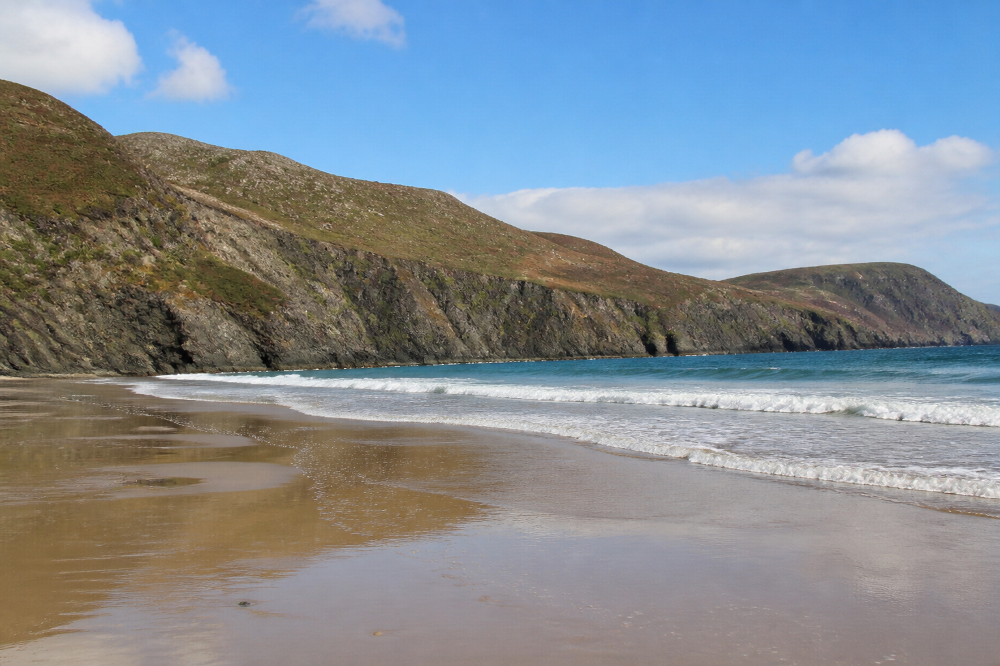
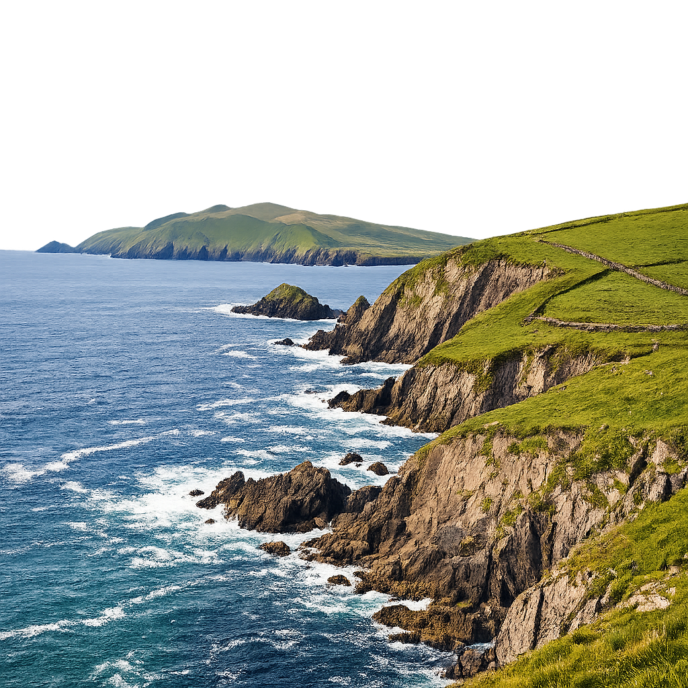
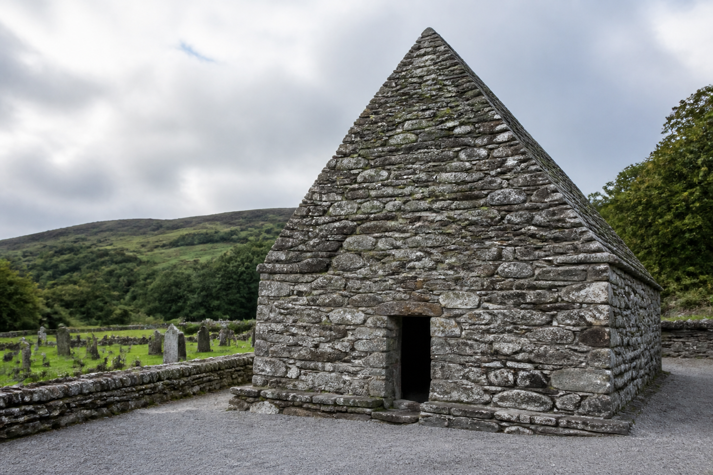
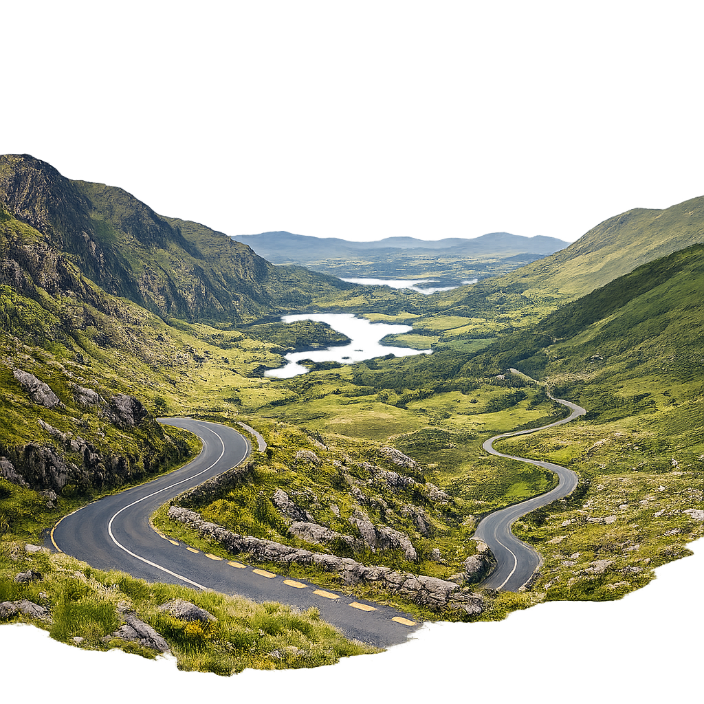
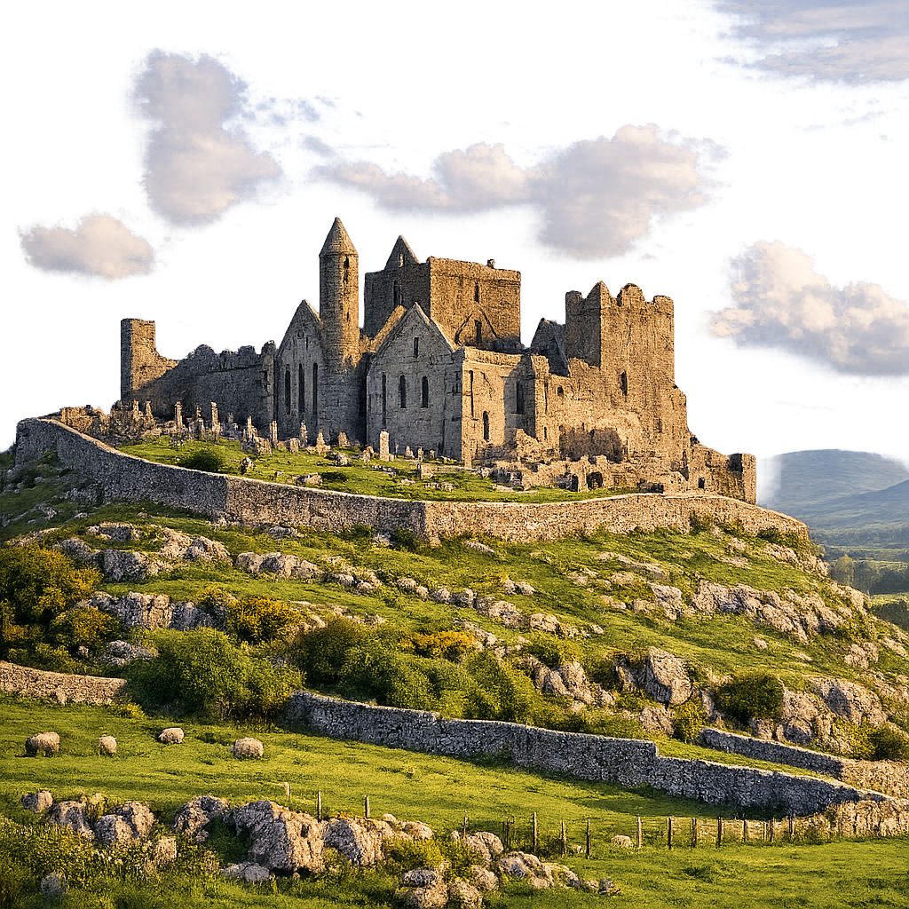
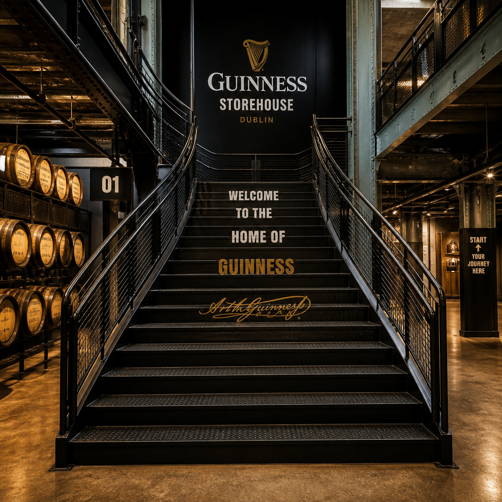

14. Juni 2025 - Doolin & Cliffs of Moher

Cliffs of Moher - Wilde Atlantikküste
Ceol na dTonnta, Doolin
- ausgeschlafen, Frühstück um 9 mit guter Auswahl
- Cave: größte Stalaktitenhöhle der nördlichen Hemisphäre, über 120 Stufen runter und wieder rauf
- kurze Wanderung zum ursprünglichen Höhleneingang
- Schiffstour zu den Cliffs of Moher - spektakuläre Küstenansicht vom Wasser
- Visitor's Center der Cliffs of Moher - Parken und Eintritt frei mit Schwerbehindertenausweis
- Dinner in Liscannor: Pub Joseph McHugh - Chicken Masala und paniertes Schnitzel mit Knoblauch-Füllung, Calamariringe als Starter
15. Juni 2025 - Wild Atlantic Way & Dingle

Wild Atlantic Way - Dingle Halbinsel
Short Strand B&B, Dingle
- Frühstück um 9, packen und Abfahrt um 11
- Wild Atlantic Way: malerische Küstenstraße mit zahlreichen Foto-Stops
- Kilkee Cliffs: mehrere Aussichtspunkte und kurzer Walk
- Kilrush: Aldi-Stopp für Bier, Radler und Nüsse
- Adare: sehr überlaufen, Parkplatz-Situation schwierig
- Barnagh Greenway Hub: Platform 22 Café - Flat White, Carrot Cake und Chocolate Cake
- Ankunft in Dingle gegen 17:30 Uhr im Short Strand B&B
- Abend: Thunfisch-Sandwich, Bier und Nüsse im Zimmer
16. Juni 2025 - Dingle Peninsula

Gallarus Oratory - 1300 Jahre alte Trockensteinkirche
Short Strand B&B, Dingle
- Frühstück kurz nach 8:30: Full Irish Breakfast und Bagel mit Lachs
- Slea Head Drive: spektakuläre Panoramastraße
- Ventry Harbour & Ventry Beach: 5 km Sandstrand
- Dun Beag Fort: Bronze Age to Iron Age Siedlung
- Bee Hive Huts: alte steinerne Bienenkorbhütten
- Café-Stopp: Suppe, Sandwich, Flat White
- Gallarus Oratory: ca. 1300 Jahre alte Kirche aus Trockensteinen - freier Eintritt mit Schwerbehindertenausweis
- Conor Pass: Gebirgspass mit Wasserfall
- Abendessen in Dingle: Fishbox - frittierte Kalamari, Scampi, Fisch mit Salat und Chips
17. Juni 2025 - Valentia Island & Ring of Kerry

Ring of Kerry - Panoramablick vom Sheehan's Point
House 15, Kenmare
- Simis Geburtstag! Frühstück mit Ständchen
- Abfahrt kurz nach 10
- Inch Beach: kurzer Stopp am langen Sandstrand
- Rossbeigh Beach: Bucht gegenüber von Dingle
- Valentia Island: Kaffee am Geokaun Mountain & Fogher Cliffs
- Überfahrt zur Insel über wenig vertrauenerweckende Brücke
- St. Finians Bay: malerische Küstenbucht
- Skellig Rocks Viewpoint: Blick auf die berühmten Felsinseln
- Ballinskelligs Beach: Spaziergang am Strand
- Waterville: Charlie Chaplin Statue
- Ring of Kerry: Sheehan's Point - toller Aussichtspunkt
- Ankunft in Kenmare gegen 18 Uhr
- Restaurant No 35: Vorspeise warmer Brie, Irish Lamb Ragout, Slow Cooked Irish Beef, Käsekuchen und Birne mit Schoko-Mandelsoße
18. Juni 2025 - Killarney Nationalpark
House 15, Kenmare
- Frühstück im „Cellar" im Erdgeschoss
- Richtung Killarney über verwirrende Google-Maps-Route
- Molls Gap: berühmter Gebirgspass
- Ladies View: Aussichtspunkt mit Unterhaltung
- Torc Waterfall: 200m Weg zum Wasserfall
- Muckross Abbey: historische Klosterruine
- Ross Castle: mittelalterliche Burg in Killarney
- Rückfahrt über Ring of Kerry
- Kenmare: Aldi-Stopp für Nüsse und Bier
- Restaurant Mulcahys: Beef-Pie und Lachs
- Abendspaziergang zum Steinzeit-Steinring
19. Juni 2025 - Cobh & Titanic Experience
Noan Country House B&B, Cashel
- Frühstück: Rührei, Speck, Flat White, Haferflocken, Brown Bread
- Überfahrt über den Healy Pass - spektakuläre Aussicht
- Lange Fahrt nach Cobh - letzte Station der Titanic
- Titanic Experience: 15:30 Uhr - interaktive Ausstellung über die Titanic-Passagiere
- Café-Stopp: Irish Coffee und Flat White
- Fahrt nach Cashel
- McDonald's Dinner: Wraps und Fries
- Ankunft im Noan Country House B&B - riesiges Herrenhaus mit großem Zimmer
20. Juni 2025 - Rock of Cashel & Kilkenny

Kilkenny Castle - Jahrhundertealtes Schloss
JB's Bar & Accommodation, Kilkenny
- Frühstück um 9: Scones, Croissants, Full Irish Breakfast, Granola, Früchte
- Rock of Cashel: mittelalterliche Ruinen auf felsigem Hügel - freier Eintritt mit Schwerbehindertenausweis
- Fahrt nach Kilkenny
- Kilkenny Castle: Jahrhundertealtes Gebäude mit Ausstellungen - Einrichtung, Gemälde, Wandteppiche aus dem 17. Jahrhundert
- Dinner: Left Bank - Bier und Burger
21. Juni 2025 - Dublin & Trinity College
Motel One, Dublin City
- Frühstück: Artistan Bakery - Almond Croissant, Carrot Cake, Pistacchio Puff, Flat White mit Hafermilch
- Fahrt nach Dublin - zunehmender Verkehr und Stau
- Check-in im Motel One um 14:30 Uhr - typisch kleine Zimmer mit Schuko-Steckdosen
- Trinity College: Book of Kells Experience - beeindruckende mittelalterliche Handschrift auf Kalbsleder
- Long Room Library: historische Bibliothek
- Ausstellung: Originalplakat von 1916 zur Proklamation der Irischen Republik und älteste irische Harfe
- Campus-Rundgang
- Dinner: Virtuoso (italienisch) - Bruschetta, Pasta mit Kalbsgeschnetzeltem und Frutti di Mare, Tiramisu
22. Juni 2025 - Dublin City Tour

Guinness Storehouse - Gravity Bar mit Aussicht
Motel One, Dublin City
- Frühstück im Motel One
- Temple Bar: Fotos vom berühmten Viertel
- Hardrock Café: Shirt-Anprobe
- Little Museum of Dublin: alternative Geschichtstour mit Gesangseinlage
- Dublin Castle: Innenhof-Besichtigung
- Guinness Storehouse: Self-Guided-Tour mit Audioguide bis unter das Dach
- Verkostung: Mini-Guinness und Gravity Bar mit Panoramablick
- Shopping: Wollsocken (leider keine kleinen für Kinder), Taschenspiegel
- Dinner: Old Mill - Knoblauchbrot, Lachs-Linguine, Cottage Pie
23. Juni 2025 - Rückreise
Rückreise nach Deutschland
- Wecker um 7, letztes Frühstück kurz nach 8
- Uber zum Flughafen Dublin T1
- Check-in und zusätzliche Gepäckaufgabe
- Flug mit Rückenwind: nur 1,5 Stunden
- Ankunft in Frankfurt mit Verspätung
- Warten auf Koffer - Transportband startet verzögert
- Defekte Aufzüge am Parkplatz - Koffer tragen über eine Etage
- Rückfahrt nach Ketsch